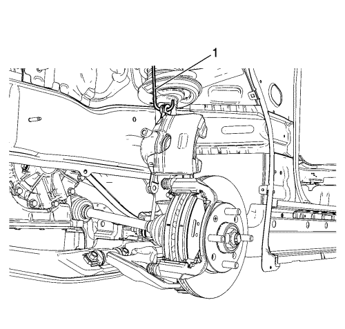
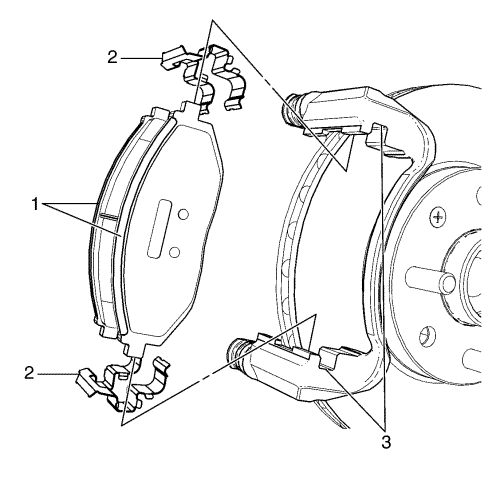
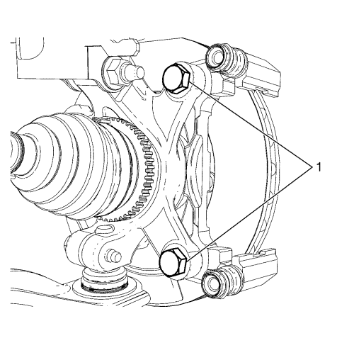
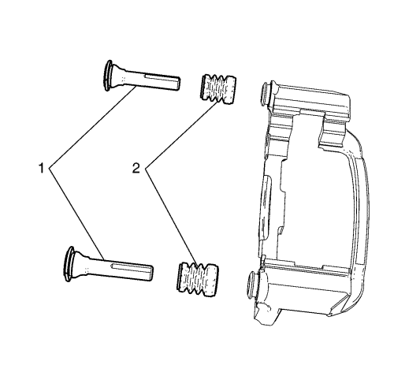

Sustitución del soporte de la pinza del freno delantero
Procedimiento de desmontaje
Advertencia: Consulte Advertencia relacionada con el polvo procedente de los frenos en la sección Prólogo

Atención: Sujete las pinzas de freno con alambre mecánico fuerte o equivalente cuando se separen del montaje y aún esté conectado el tubo flexible de freno hidráulico. Si no se sujetan las pinzas de esta manera, el tubo flexible de freno tendrá que soportar el peso de las pinzas, lo que puede provocar que se dañe el tubo flexible de freno y esto, a su vez, puede provocar una fuga de líquido de frenos.
- Desmonte la pinza de freno, de su soporte de fijación, y sujétela con un gancho resistente (1), o similar. NO desconecte de la pinza el latiguillo del freno hidráulico. Consultar Sustitución de la pinza del freno delantero .

- Extraiga las pastillas de freno (1) del soporte de la pinza de freno .
- Extraiga las fijaciones de pastilla de freno (2) del soporte de la pinza de freno.
- Si va a volver a utilizar el soporte, limpie a fondo las superficies de contacto del soporte de la pinza con el hardware de la pastilla de freno (3), para eliminar los residuos y la corrosión.
- Revise los retenes de las pastillas del freno de disco (2) para ver si se observa lo siguiente:
| • | Lengüetas de soporte torcidas |
| • | El soporte de fijación de la pinza de freno está suelto. |
| • | Pastillas de freno de disco sueltas |
- Si se encuentra cualquiera de las anomalías citadas, habrá que cambiar las fijaciones de la pastilla de disco de freno.

Nota: Los tornillos del soporte de fijación de la pinza de freno no deben ser reutilizados. Siempre que se desmonten o aflojen los tornillos, sustitúyalos con tornillos nuevos.
- Desmonte los tornillos del soporte de fijación de la pinza de freno (1).
- Desmonte el soporte de la pinza de freno, de la mangueta.

- Revise el soporte de la pinza. Si el soporte de la pinza de freno está torcido, agrietado o averiado, es necesario sustituirlo.
- Compruebe si los pasadores guía de la pinza de freno (1) se pueden mover libremente, y compruebe el estado de los guardapolvos de los pasadores guía (2). Mueva los pasadores guía hacia dentro y hacia fuera dentro de los orificios del soporte sin desenganchar las correderas de las fundas y observe lo siguiente:
| • | Movimiento limitado del pasador guía de la pinza |
| • | El soporte de fijación de la pinza de freno está suelto |
| • | Pasadores guía de la pinza agarrotados u obstruidos |
| • | Fundas rotas o desgarradas |
- Si se encuentra una de las situaciones que se indican, habrá que sustituir las espigas guía de la pinza del freno o las fundas.
Procedimiento de montaje
- Monte el soporte de fijación de la pinza de freno en la mangueta.
Precaución: Consulte Precaución con las fijaciones en la sección Prólogo
- Monte 2 tornillos NUEVOS para el pasador guía de la pinza de freno (1), y apriételos a 95 N·m (70 lb pie).
- Aplique una capa muy fina de lubricante de silicona para frenos, de alta temperatura, sólo en las superficies de contacto del soporte de la pinza con el hardware de la pastilla de freno (3).
- Limpie las superficies de contacto de los retenes de la pastilla de freno con la pastilla de freno (2).
- Monte las fijaciones de las pastillas de freno (2) al soporte de la pinza de freno .
Nota: Se tiene que montar la pastilla de disco de freno equipada con sensor de desgaste en el interior del rotor con el borde primario del sensor encarado con el rotor de freno durante el movimiento hacia delante de las ruedas, o en la parte superior de la pastilla cuando se instala en posición de vehículo.
- Monte las pastillas de freno (1) en el soporte de la pinza de freno.
- Desmonte el soporte y vuelva a colocar la pinza de freno en su posición, sobre las pastillas de freno y en el soporte de fijación. Consultar Sustitución de la pinza del freno delantero .
| © Copyright Chevrolet Europe. Reservados todos los derechos |